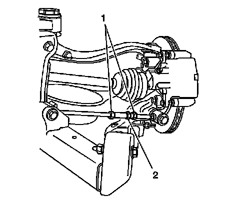

Rear Toe Adjustment
Rear Toe Adjustment

Important: Complete the left and right rear toe adjustments separately, per wheel. Using the following procedure.
1. Loosen the adjustment link jam nuts (1).
2. In order to adjust the toe, rotate the turnbuckle (2).
Notice: Refer to Fastener Notice (Fastener Notice) .
3. Hold the turnbuckle (2) when tightening the jam nuts (1).
Tighten the jam nuts to 75 N.m (55 lb ft).
4. Recheck the toe setting after tightening.
5. Readjust the toe setting if necessary. Refer to Wheel Alignment Specifications (Specifications) .